•
CHARACTERS
•
MEET THE SPIRITS
AKANA
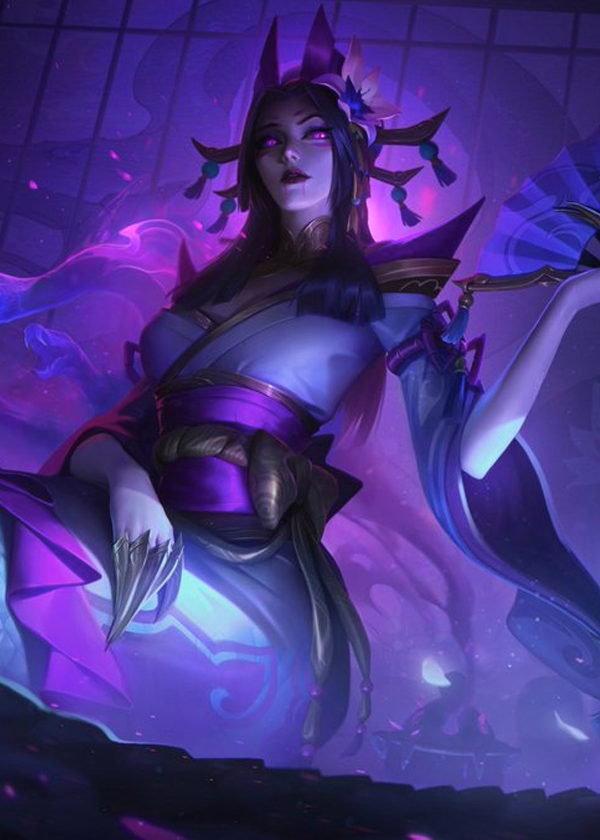
CASSIOPEIA
Spirit of Temptation
❀
Rumored to have once been a beautiful princess,
legend says Cassiopeia vanished into the mountains when her sister
staged a coup, never to return. So great was her beauty, and so renowned
her cunning, that a shrine was built to honor this 'spirit of temptation',
until her story was accepted into popular folklore.
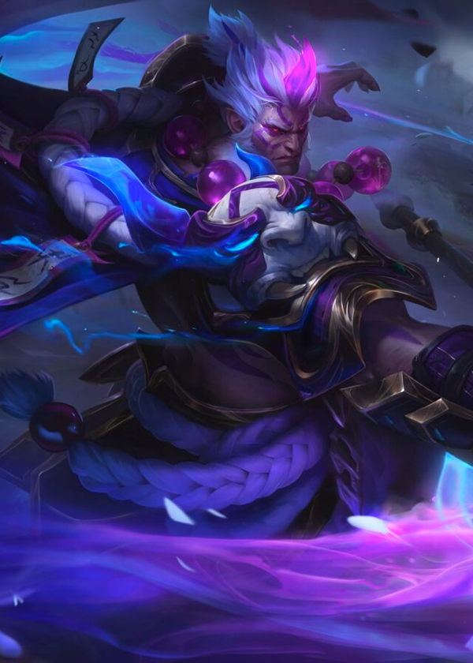
DARIUS
Spirit of War
❀
Darius' body fell to the dirt, yet another soldier's
sacrifice. But his soul would not rest. Picking up his axe just as soon as
it was knocked from his mortal hand, the Spirit of War arose. A calamity
motivated only towards bloodshed, Darius stalks the mortal world, searching
for the thrill of battle.
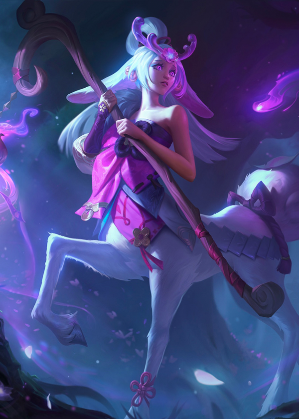
LILLIA
Spirit of Loss
❀
A shy fawn spirit, Lillia once served as the guardian
of a sacred Ionian forest—until her grove was destroyed and cast into flame.
Consumed by loss, she now slumbers in the spirit realm, reliving the destruction
in an unending nightmare—unaware of the timid hope still waiting to bloom...
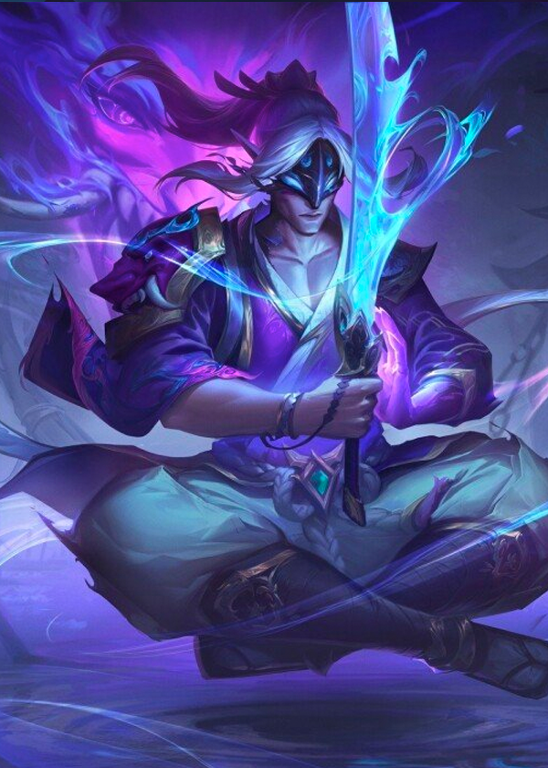
MASTER YI
Spirit of Legacy
❀
Legends speak of Master Yi, a swordsman who took
but one student in his lifetime. After an unceremonious betrayal, Yi
perished—not from a blade, but from a broken heart. Now the Spirit of
Legacy roams the spirit world, searching for a pupil. He is lost, anyone
that joins him destined to face the same fate.
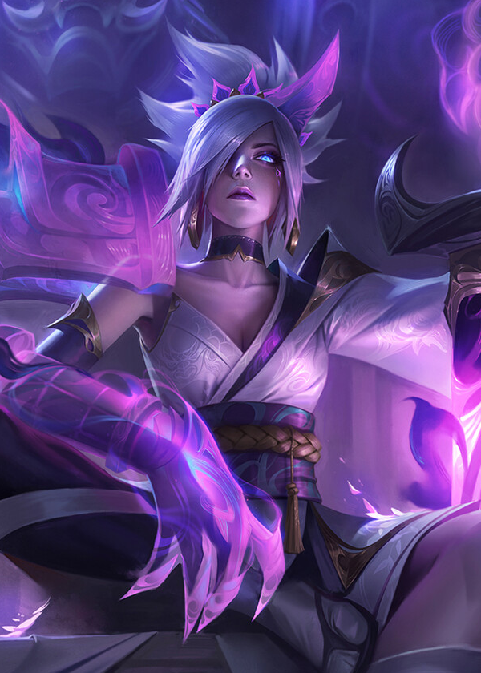
RIVEN
Spirit of Despair
❀
A brave warrior from an ancient land, Riven was
ignobly cut down in the heat of battle thousands of years ago, her
sword shattering in the process. Unable to find peace, she obsessively
scours an otherworldly battlefield for pieces of her broken blade,
possessed by a horrific darkness that guides her into oblivion.
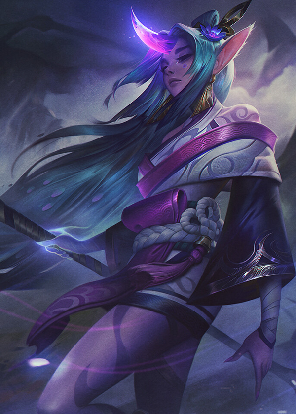
Soraka
Spirit of Pity
❀
In a secluded corner of the Akana forest, Soraka
weeps for those she's lost. Each life cut short she longed to save,
but for as many that welcome her as a savior, there are others who
see her power as a merciless cruelty. To the Spirit of Pity, death
is never a blessing.
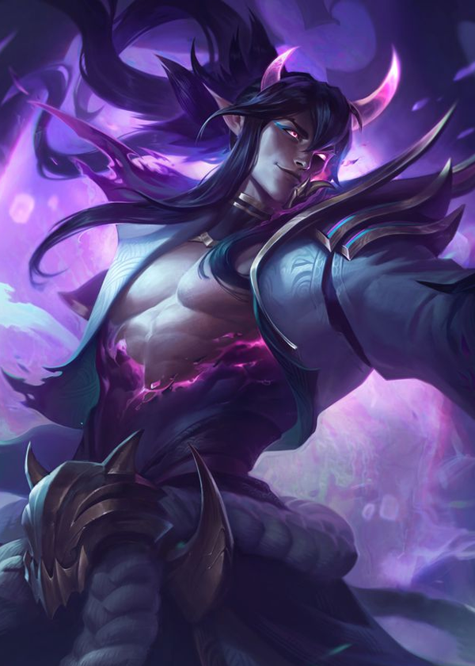
THRESH
Spirit of Obsession
❀
An ancient demon of obsession, Thresh delights in
tormenting the spirits of those he deems as flawed, but blossoming with
potential. He haunts the spiritual afterlife as a supreme collector of souls,
tempting the dead away from their path to salvation until they are trapped
for eternity within their own memories.
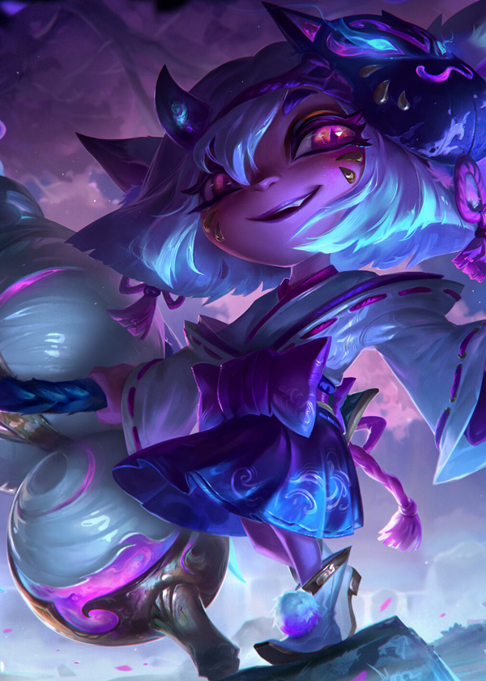
TRISTANA
Spirit of Chance
❀
For those that seek glory on the battlefield, to
those that look to the spirits for a bountiful harvest, Tristana
greets all with a toothy grin. The Spirit of Chance has no favorites,
no obligations or motives. She simply delights in the chaos, the fear
in men's eyes at the roll of the dice.
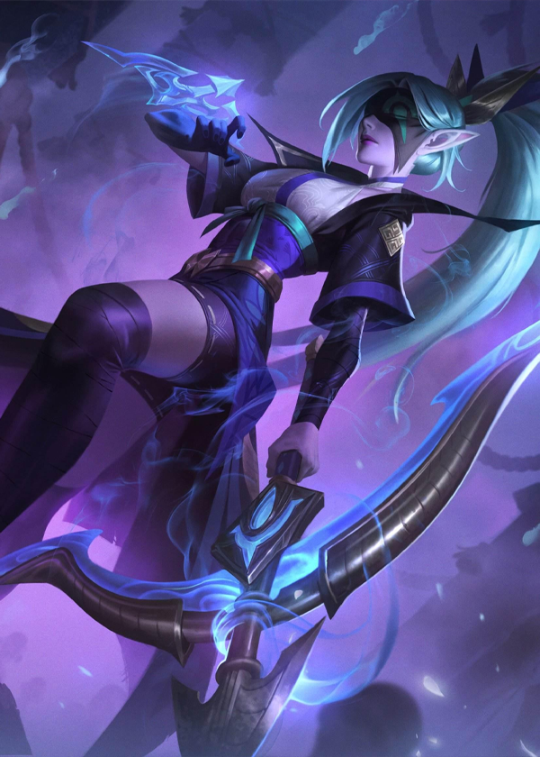
VAYNE
Spirit of Hate
❀
Vayne came from a lost clan of monster hunters,
annihilated to the last when the primordial demon of pain chanced
upon their hidden village. Unable to let go, and doomed to her own
obsessions for eternity, she hunts the creature without end, always
unable to catch it.
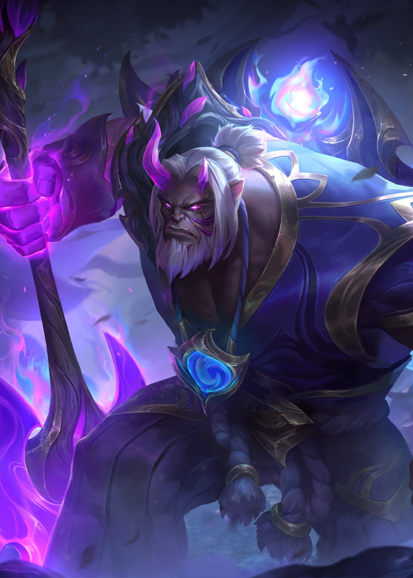
YORICK
Spirit of Ruin
❀
The grove he called home burnt to ashes before
his very eyes. While another retreated into solitude, Yorick allowed
the rage to consume him. The flowers and trees that bloom in the Spirit
of Ruin's wake are haunting, the gardeners that tend to them howling
creatures of the night.
KANMEI
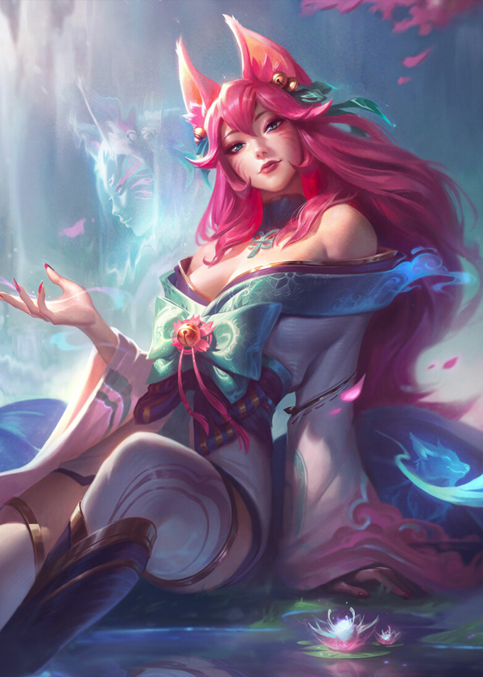
AHRI
Spirit of Salvation
❀
The famed Spirit of Salvation, and the fox all
mortals are beckoned towards when their souls arrive to the spirit
realm. A capricious, whimsical spirit who sees the fate of the living
as a game of chase, she offers the chance for souls to find their
final rest… but will not intervene if they stray from the path.
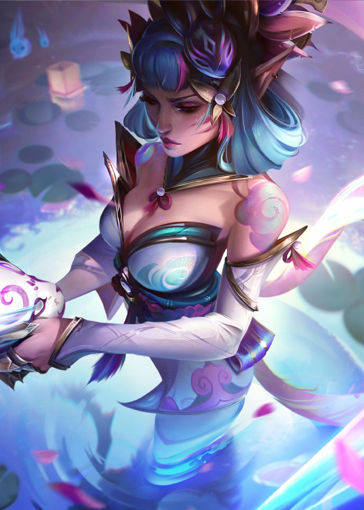
EVELYNN
Spirit of Love
❀
Come. Leave your flesh behind and pass into the
Spirit World. Bring with you only your desires, your vices, your painful
memories. Let the Spirit of Love feed on these unwanted temptations,
for her hunger is ravenous. Evelynn will show you peace at last.
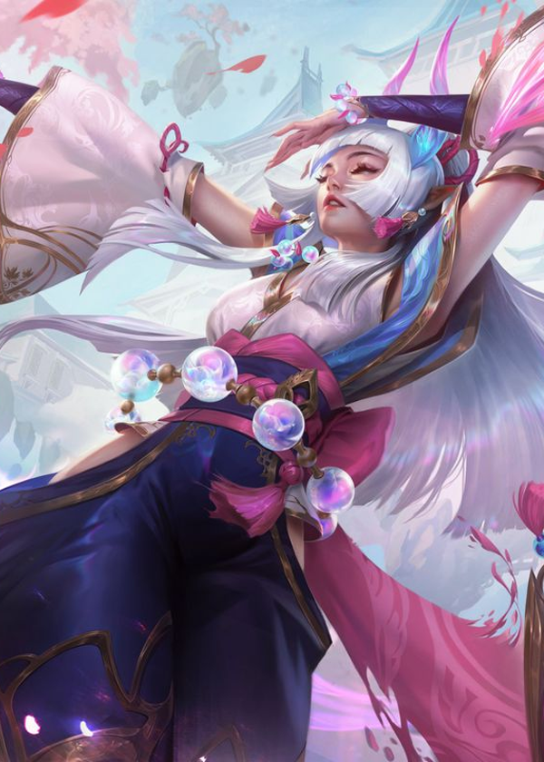
SYNDRA
Spirit of Freedom
❀
Children hear stories of the savior of lost souls,
the ever-reclusive Spirit of Freedom. One such speaks of a tree that
wrapped its roots around a wandering wisp. The wisp struggled alone—
until Syndra ripped off the bindings that held it tight, as she would
do for all creatures, lest they be lost forever.
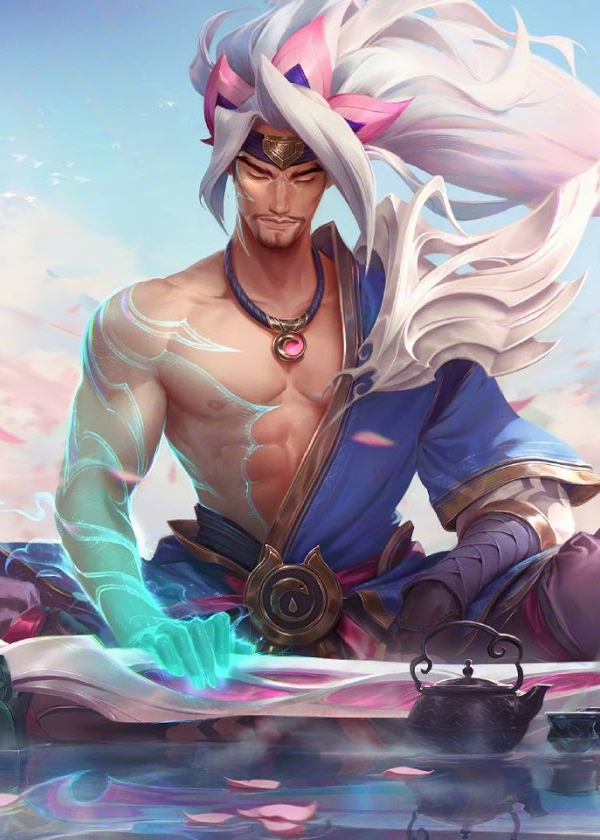
YASUO
Spirit of Heroism
❀
Long ago, two brothers fought a bitter war across
Ionia. Yasuo, the younger brother, was a warlord renowned for his
roguish demeanor—until he was accused of crimes against the country
and took up arms to defend himself. Both were fated to fall in their
final duel… a lesson, perhaps, in pride and hubris.
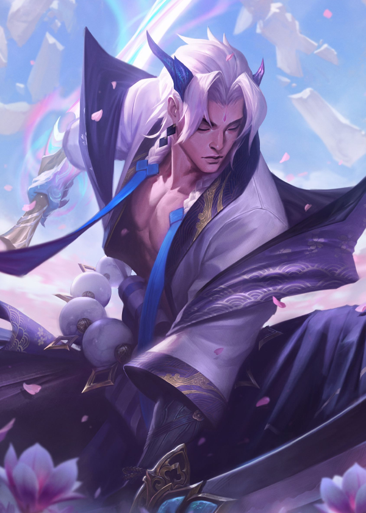
Yone
Spirit of Reflection
❀
Long ago, two brothers fought a bitter war across
Ionia. Yone, the older brother, was a warlord renowned for his
adherence to honor and duty. He fought to defend the country
against those who would break its rites and rituals - until he was
forced to confront his own brother for his crimes. Both were fated to
fall in their final duel… a lesson, perhaps, in pride and hubris.
AKANA & KANMEI
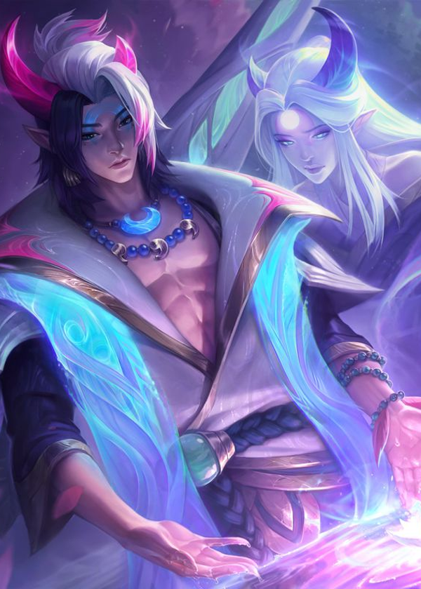
APHELIOS
❀
Ionians share whispered stories of the twin spirits
of the night, Aphelios and Alune. It is said the darkening of the sky
comes from the brother's armaments, tearing the fabric of blues and whites
apart to create an obsidian canvas painted with stars. The sister's motives
are more... mysterious.
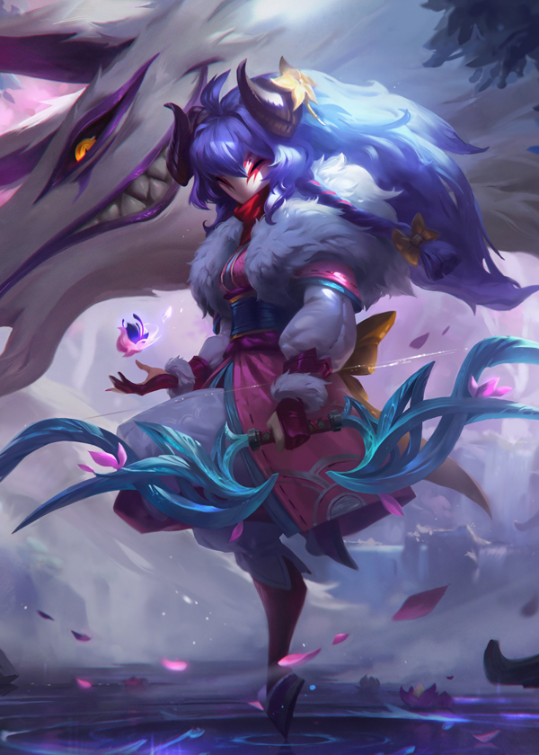
KINDRED
❀
In the Ionian tradition, the Kindred are interpreted
as a child and her beastly companion, endlessly playing games with
one another until they are called to perform their duties. The two
do not know where they came from, but it is said they feel a sense
of loss for someone they knew long ago…
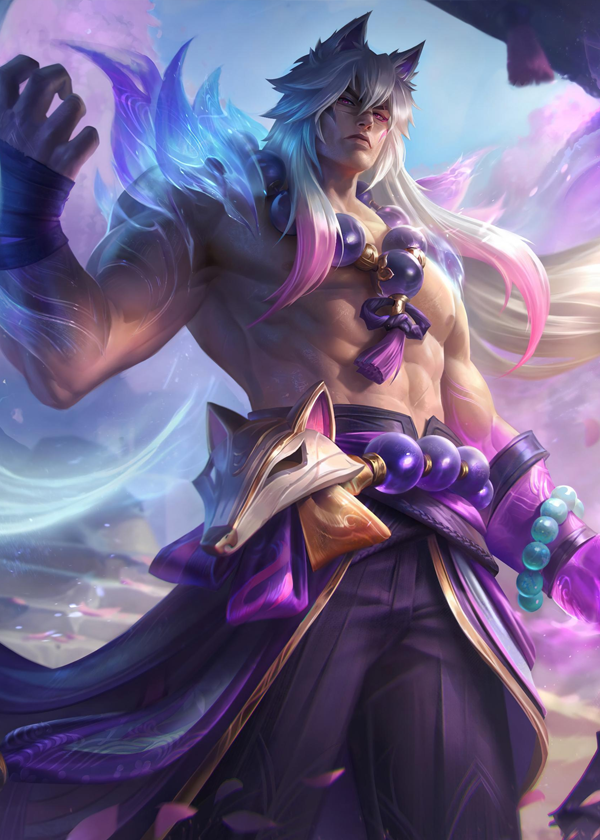
SETT
❀
Some guide the dead down the path; others tempt
them from it. Another still has no allegiances, as his spirit lies
in conflict with itself. Born from Kanmei and Akana, Sett lived
harmoniously until, abandoned by his father, he sought retribution.
Now he can only catch whispers of salvation as he spends his days
challenging slain warriors, testing their worth.

All information is taken off and inspired by League of Legends by Riot Games.
Website created by Wendy Li as a project for 05-430 Programming Usable Interfaces.
Website created by Wendy Li as a project for 05-430 Programming Usable Interfaces.